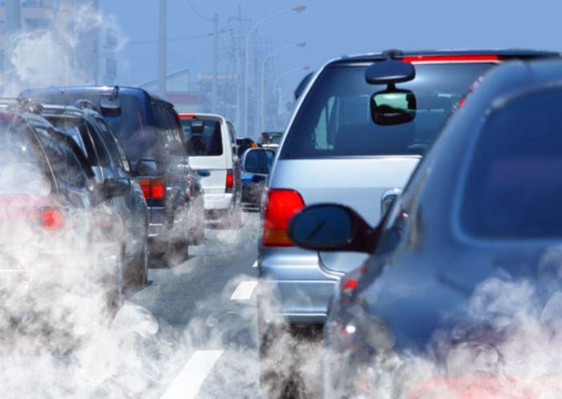

This application was implemented by Patrick McCluskey as part of a ten-week Master's project in
Computer Science at the University of Newcastle.
The service is intended to run persistently on your monitor, so that you will be aware
of the current pollution levels in certain areas of Newcastle-upon-Tyne.
It allows you to visualise in the urban space those areas which are dangerous either
from Nitrogen Dioxide (NO2), Nitrogen Oxides (NOx) or Carbon Monoxide (CO).
By default, the web service will refresh automatically every 2
minutes so that you can see the current situation as it happens.
This option can be unchecked to allow more in-depth study of one particular set of data.
The data is assembled from the live data feeds of the Urban Observatory.
The data is colour coded into a traffic-light system for danger to humans from the levels shown. Clicking on the plotted points will reveal their specific value.
If desired, only red (dangerous) levels will be plotted on the map, by checking the relevant box.
